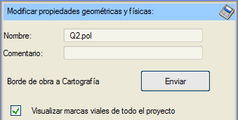
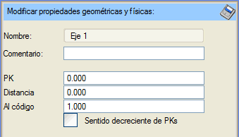

Genel Bilgiler
Bir sahnenin elemanları herhangi bir kontrol olmaksızın "dağınık" halde değildir. Sahnenin hiyerarşik düzenleme ağacında gösterildiği gibi, türlerine ve işlevlerine göre düzenlenmiş ve sınıflandırılmıştır. Düzenleyici düğümlerin bazı yapılandırılabilir özellikleri olabilir.
Düzenleyiciler, sahne elemanlarının saklandığı veya referans verildiği klasörler gibi çalışır.
Sanal 3B tarafından sahneyi yapılandırmak için gerekli olan belirli veri türlerini bulabilmek için yerleştirilmiş sabit düzenleyiciler vardır (alt kök düğümleri). Otomatik olarak oluşturulan ve özel bir bağlantısı olan elemanları bir arada tutmak için oluşturulan düzenleyiciler vardır (proje, eksen veya grid düğümleri). Kullanıcının geometriyi istediği gibi sınıflandırmak için oluşturabileceği düzenleyiciler vardır (klasörler). Ve içerdikleri elemanlara özel bir nitelik kazandıran düzenleyiciler vardır (nesne dizisi).
Alt Kök
Bu düğümler değiştirilemez, adlarıyla var olmalı ve kendilerini karakterize eden unsurları içermelidir: Geometri, Kameralar, Işıklar, Ortam, Render ve Animasyonlar. Özelliklerine erişim yoktur; üzerlerine imleçle tıklandığında, ilk alt düğüme erişilir.
Klasör
Genel karakterli bir düzenleyicidir, sadece Geometri içinde oluşturulabilir. Onlara bir isim verilebilir.
Geometri içinde önceden tanımlanmış özel bir klasör vardır: "3B Katı Modeller"; Sanal 3B'de oluşturulan, yüklenen veya içe aktarılan tüm nesneler varsayılan olarak bu klasöre gider.

Sanal 3B'ye Doğrusal Proje'nin Boykesit menüsünden girildiğinde ve aktif eksenlerin geometrisi gösterildiğinde, projeyi düzenleyen bir dizi klasör otomatik olarak oluşturulur. Böylece, doğrudan "Geometri" düğümüne yerleştirilen ve proje adını taşıyan ana bir proje klasörü oluşturulur.
Burada, proje geometrisiyle birlikte oluşturulan proje sınırı çizgilerinin haritaya gönderilmesi belirtilebilir. Ayrıca projenin yol çizgilerinin boyanıp boyanmayacağı da kontrol edilebilir; bazen o kadar çok olabilirler ki 3B görüntüleyici ile çalışmayı aşırı yavaşlatabilirler.
Proje klasörünün içinde, her bir eksen ve kurp için bir klasör oluşturulur. Bunların her biri, bu eksenlerin bilgilerinden oluşturulan geometrileri içerir, aynı zamanda her bir viyadüğü ve yol çizgilerini içeren başka klasörler de bulunur. Bu yol çizgileri de, onları oluşturan çizgi tipine göre klasörler halinde sınıflandırılır.
Eksen klasörlerinde, kamerayı bir eksenin belirli bir noktasına (KM'si, kodu ve o koda olan mesafesi ile tanımlanan) yerleştirmek için seçenekler bulunur.
Ayrıca, topografik veri gridleri yüklendiğinde de özel klasörler oluşturulur; bunlar ister ikili gridler olsun, ister çok sayıda üçgeni olan ttp'ler (üçgenlenmiş yüzeyler) olsun.
Nesne Dizisi
Bu tür bir düzenleyici başka elemanlar içermez, sadece onlara ve aralarında kurulan bitişiklik ilişkisine referans verir. Yararı, aynı rolü oynayacak aktörleri gruplamaktır: aynı güzergahı takip edecek nesneler.
|